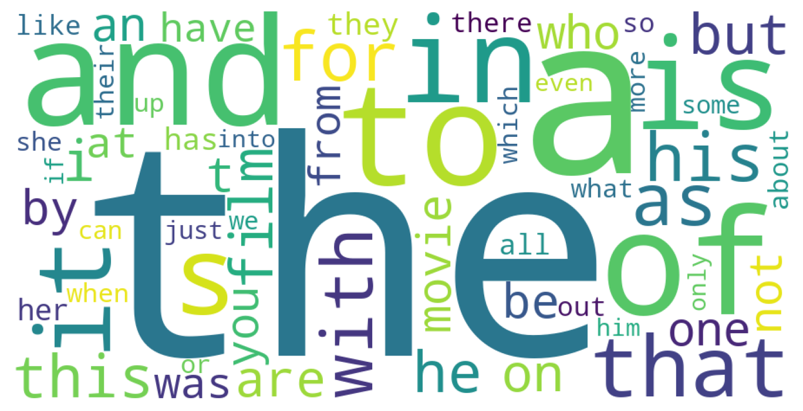
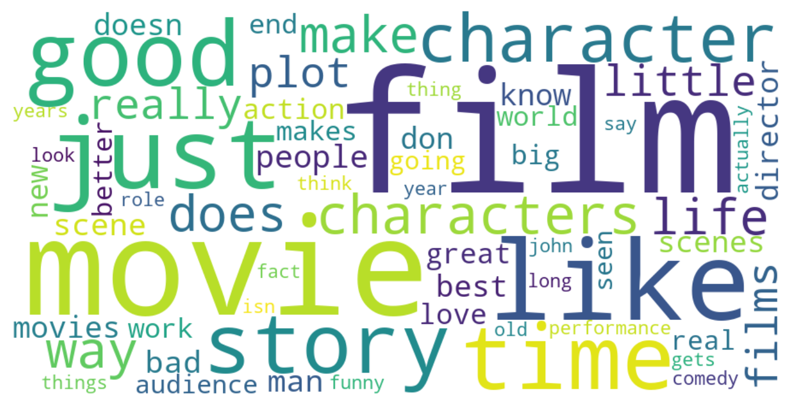
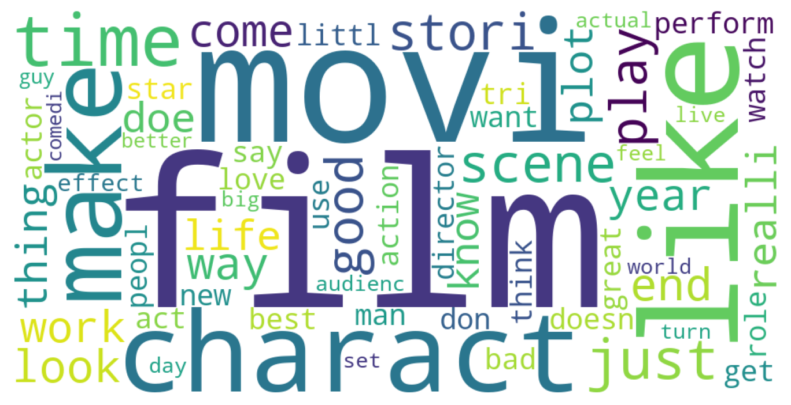
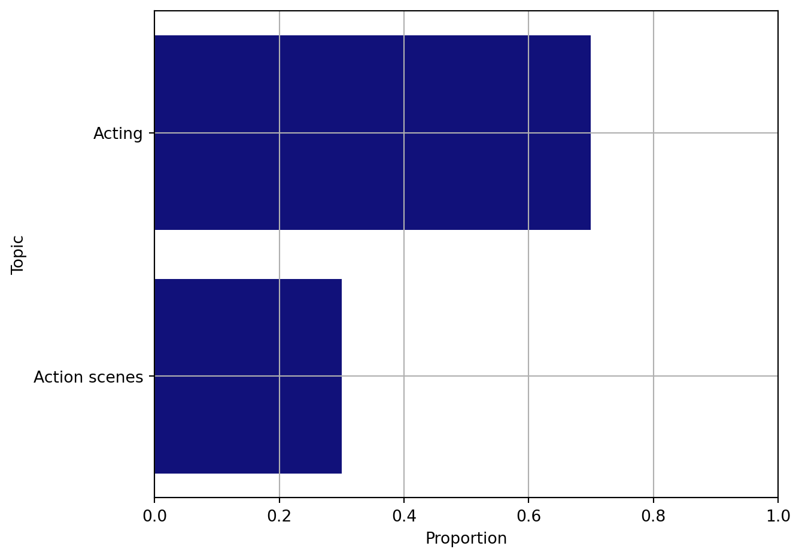
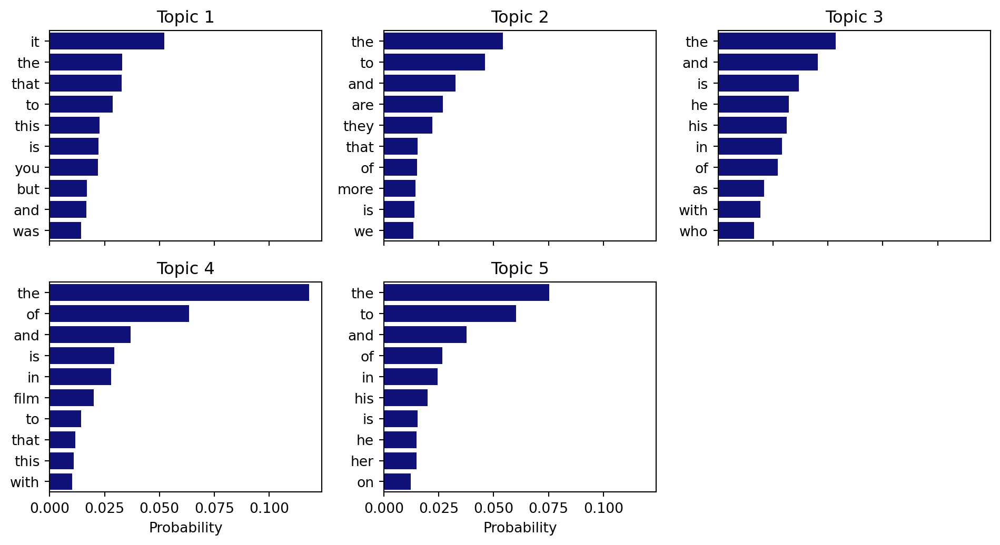
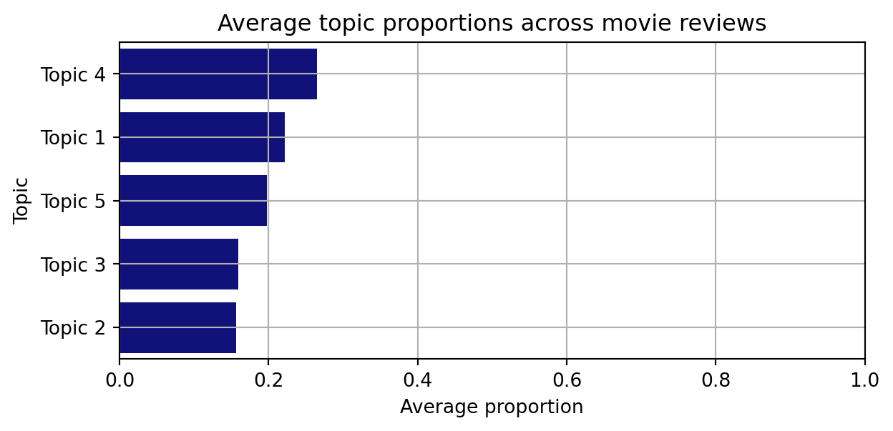

import pandas as pd
import seaborn as sns
import matplotlib.pyplot as plt
from wordcloud import WordCloud
from nltk.stem import PorterStemmer
from sklearn.feature_extraction.text import CountVectorizer
from sklearn.decomposition import LatentDirichletAllocationIntroduction to Text Analytics
IN2039: Data Visualization for Decision Making
Agenda
- Introduction to text analytics
- Text cleaning and word clouds
- Document-Term Matrix
- Topic modeling with Latent Dirichlet Allocation
- Conclusions
Introduction to Text Analytics
Text data
So far, we have worked mainly with numerical and categorical variables.
. . .
However, a large amount of information is stored in the form of text.
- Comments on social media.
- Reviews of movies, products, and services.
- Responses to open-ended survey questions.
- Customer complaints.
Text analytics
Text analytics is the process of extracting useful information from text data.
. . .
Here, we will transform text into numerical data that can be summarized and visualized.
Our goal is not to read every document individually, but to identify patterns across many documents.
Example: Movie reviews
Imagine that you work for a movie streaming platform and have access to thousands of written reviews.
Reading all the reviews manually would take a considerable amount of time.
. . .
Can we use data visualization to understand what viewers talk about when reviewing movies?
Principle 1: Define the question
Typical questions in a basic text analysis are:
- What words appear most frequently in movie reviews?
- What are the main themes discussed by viewers?
- How common are these themes across the reviews?
Principle 2: Turn data into information
| Question | Method or graph |
|---|---|
| What words are frequent? | Word cloud, bar chart |
| What themes appear? | Topic modeling, bar charts |
| How common are the themes? | Topic prevalence plot |
scikit-learn library
- scikit-learn is a robust and popular library for machine learning in Python
- It provides simple, efficient tools for data mining and data analysis
- It is built on top of libraries such as NumPy, SciPy, and Matplotlib
- https://scikit-learn.org/stable/

nltk library
- nltk (Natural Language Toolkit) is a popular Python library for natural language processing (NLP).
- It provides tools for processing and analyzing textual data.
- It includes functions for tokenization, stemming, and removing stop words.
- https://www.nltk.org/

wordcloud library
- wordcloud is a Python library for creating word clouds from textual data.
- It allows us to visualize the most frequent words in a collection of documents.
- https://amueller.github.io/word_cloud/

Load the libraries
Let’s load the old and new libraries into Python.
Load the data
We will use the Movie Reviews corpus distributed with nltk, containing many English-language movie reviews.
movie_review_data = pd.read_excel("movie_review.xlsx")
(movie_review_data
.filter(["review"], axis = 1)
).head(3)A document and a corpus
- A document is one unit of text under study (one movie review in our example).
- A corpus is a collection of documents (all the movie reviews).
- A token is a unit of text, such as a word.
Text Cleaning and Word Clouds
Why clean text?
The words Movie, movie, and movie! convey essentially the same information in this example.
However, a computer may treat them as different strings.
We need to define how to represent the text before computing summaries.
Basic text cleaning
- Convert uppercase letters to lowercase.
- Remove punctuation and numbers (when not relevant).
- Remove unnecessary spaces.
- Separate the text into words (tokenization).
These decisions depend on the research question. Numbers, punctuation, emojis and capitalization can be informative in other applications.
Example of text cleaning
example = pd.Series(["Great Movie! I watched it 2 times."])
example = (example.str.lower()
.str.replace(r"[^a-z\s]", " ", regex=True)
.str.replace(r"\s+", " ", regex=True)
.str.strip())
print(example.iloc[0])great movie i watched it timesThe expression [^a-z\s] identifies characters other than English letters and whitespace.
Clean the reviews
We apply the same operations to the column review.
movie_review_data["clean"] = (movie_review_data["review"].str.lower()
.str.replace(r"[^a-z\s]", " ", regex=True)
.str.replace(r"\s+", " ", regex=True)
.str.strip())We keep the original text so that we can return to it when interpreting our results.
Tokenization
We use .str.split() to separate the words in each review.
movie_review_data["words"] = movie_review_data["clean"].str.split()
movie_review_data.filter(["words"], axis = 1).head(1)| words | |
|---|---|
| 0 | [films, adapted, from, comic, books, have, had... |
We remove the missing rows in the generated dataset.
movie_review_data = movie_review_data.dropna(subset=["words"])A frequency table for words
The function .explode() creates one row for each element of a list.
words = movie_review_data["words"].explode()
word_freq = words.value_counts()
word_freq.head(10)words
the 76570
a 38107
and 35578
of 34124
to 31938
is 25202
in 21825
s 18886
it 16110
that 15926
Name: count, dtype: int64Word cloud
A word cloud displays words using different font sizes.
. . .
In a frequency-based word cloud, words that occur more frequently are displayed using larger fonts.
. . .
The goal is to quickly identify prominent words in a corpus.
Word cloud in Python
We use WordCloud() from the wordcloud library. The method .generate_from_frequencies() uses our frequency table.
# Tell Python you want to create a word cloud
cloud = WordCloud(width=900, height=450, background_color="white",
max_words=60, random_state=3301655)
# Compute the word cloud using the frequency table.
cloud.generate_from_frequencies(word_freq.to_dict())The parameter max_words controls the number of words that appear in the cloud.
plt.figure(figsize=(9, 4.5))
plt.imshow(cloud)
plt.axis("off")
plt.show()
Do the largest words help us answer our research question?
Stop words
Words such as
the,a,of, andisoccur frequently but are often not useful for identifying themes.We call such words stop words.
We can remove them before constructing the word cloud.
Remove stop words in Python
Scikit-learn provides a list of standard English stop words.
from sklearn.feature_extraction.text import ENGLISH_STOP_WORDS
stop_words = set(ENGLISH_STOP_WORDS)
movie_review_data["terms"] = movie_review_data["words"].apply(
lambda words: [word for word in words
if word not in stop_words and len(word) > 2]
)The expression inside brackets keeps words that satisfy both conditions.
Stop-word lists are not universal. For some analyses, removing words such as ‘not’ can destroy important information!
Let’s recompute the frequency table and update the word cloud.
word_freq = movie_review_data["terms"].explode().value_counts()
cloud.generate_from_frequencies(word_freq.to_dict())<wordcloud.wordcloud.WordCloud at 0x1381983a0>The new word cloud
plt.figure(figsize=(9, 4.5))
plt.imshow(cloud, interpolation="bilinear")
plt.axis("off")
plt.show()
Stemming
Words with different endings can refer to similar concepts.
| Original words | Stem |
|---|---|
| play, playing, played | play |
| connect, connected, connecting | connect |
| movies, movie | movi |
Stemming reduces words to a common form using rules for removing or modifying endings.
A stem is not necessarily a valid English word. Lemmatization is an alternative that aims to recover dictionary forms.
Stemming in Python
We use the Porter stemmer from nltk.
stemmer = PorterStemmer()
movie_review_data["stems"] = (movie_review_data["terms"]
.apply(lambda words: [stemmer.stem(word) for word in words])
)Before showing the revised word cloud, recompute the frequency table and update the word cloud.
stem_freq = movie_review_data["stems"].explode().value_counts()
cloud.generate_from_frequencies(stem_freq.to_dict())<wordcloud.wordcloud.WordCloud at 0x1381983a0>Word cloud after stemming
plt.figure(figsize=(10, 5))
plt.imshow(cloud)
plt.axis("off")
plt.show()Principle 3: Apply graphic design
We can improve the word cloud using additional commands.
Code
plt.figure(figsize=(5, 5), dpi=150)
plt.imshow(cloud, interpolation="bilinear")
plt.title("Most frequent words in movie reviews",
fontsize=18, fontweight="bold", color="darkblue", pad=20)
plt.axis("off")
plt.tight_layout()
plt.show()
Document-Term Matrix
From text to numerical data
Consider three short documents:
- Document 1: funny movie funny
- Document 2: funny actor
- Document 3: action movie
. . .
We count the number of times each term occurs in each document.
Document-term matrix
| Document | action | actor | funny | movie |
|---|---|---|---|---|
| 1 | 0 | 0 | 2 | 1 |
| 2 | 0 | 1 | 1 | 0 |
| 3 | 1 | 0 | 0 | 1 |
Each row represents a document, and each column represents a term.
. . .
Each entry is the frequency of a term in a document.
Bag of words
The document-term matrix is an example of the bag-of-words representation.
- We retain the frequency of each term.
- We lose the order of the words.
. . .
For example, dog bites man and man bites dog have the same bag-of-words representation.
Document-term matrix in Python
We use CountVectorizer() from scikit-learn.
example_docs = ["funny movie funny", "funny actor", "action movie"]
vectorizer = CountVectorizer()
X_example = vectorizer.fit_transform(example_docs)
pd.DataFrame(X_example.toarray(),
columns=vectorizer.get_feature_names_out())| action | actor | funny | movie | |
|---|---|---|---|---|
| 0 | 0 | 0 | 2 | 1 |
| 1 | 0 | 1 | 1 | 0 |
| 2 | 1 | 0 | 0 | 1 |
Create the matrix for the reviews
We join the cleaned terms to obtain one string per review.
movie_review_data["text"] = movie_review_data["terms"].str.join(" ")
vectorizer = CountVectorizer(min_df=5, max_df=0.8, max_features=3000,
stop_words='english', lowercase=True, token_pattern=r"(?u)\b\w\w+\b")
X = vectorizer.fit_transform(movie_review_data["text"])
X.shape # Shape of the DTM(64704, 3000)We use unstemmed terms for interpretable topic labels. The matrix is sparse; avoid converting the full matrix to a dense table. min_df removes terms in fewer than five documents; max_df removes terms in more than 80% of documents; max_features caps vocabulary size by corpus frequency.
The basic parameters of this function are:
min_df: The minimum document frequency required for a term to be included in the vocabulary, ignoring rare words that appear in fewer documents than this threshold (specified as an integer count or a proportion).max_df: The maximum document frequency allowed for a term, ignoring overly common corpus-specific words that appear in more documents than this threshold (specified as an integer count or a proportion).max_features: The maximum number of top terms to keep in the vocabulary, ordered by their overall frequency across the entire corpus.stop_words='english': removes the English stop words (ENGLISH_STOP_WORDS)token_pattern=r"(?u)\b\w\w+\b": Keeps only alphanumeric words of 2+ characters, ignoring punctuation and single letters.
Inspect the matrix
terms = vectorizer.get_feature_names_out()
pd.DataFrame(X[:5, :8].toarray(), columns=terms[:8])| abandoned | abilities | ability | able | absolute | absolutely | absurd | academy | |
|---|---|---|---|---|---|---|---|---|
| 0 | 0 | 0 | 0 | 0 | 0 | 0 | 0 | 0 |
| 1 | 0 | 0 | 0 | 0 | 0 | 0 | 0 | 0 |
| 2 | 0 | 0 | 0 | 0 | 0 | 0 | 0 | 0 |
| 3 | 0 | 0 | 0 | 0 | 0 | 0 | 0 | 0 |
| 4 | 0 | 0 | 0 | 0 | 0 | 0 | 0 | 0 |
The matrix contains many zeros because most documents contain only a small subset of all terms.
Topic Modeling
Latent Dirichlet Allocation (LDA)
LDA is an unsupervised statistical model that identifies latent (unobserved) topics in a collection of documents.
The basic idea is that:
- Each document is a mixture of topics.
- Each topic is a probability distribution over terms.
LDA here means Latent Dirichlet Allocation, not Linear Discriminant Analysis. Dirichlet distributions are used as priors for the topic mixtures and term probabilities. Mathematical derivations are beyond the scope of this course.
A hypothetical example
| Term | Topic 1 | Topic 2 |
|---|---|---|
| actor | 0.40 | 0.05 |
| performance | 0.35 | 0.05 |
| explosion | 0.10 | 0.45 |
| action | 0.15 | 0.45 |
Each column sums to one. We might interpret Topic 1 as acting and Topic 2 as action scenes.
The names are assigned by the analyst, not by LDA.
A mixture of topics
A hypothetical review may contain 70% Topic 1 and 30% Topic 2.

Fit the LDA model in Python
We fit the LDA model with a user-specified number of topics to all the reviews.
n_topics = 5
vectorizer = CountVectorizer(min_df=5, max_df=0.8, max_features=3000)
X = vectorizer.fit_transform(movie_review_data["review"])
terms = vectorizer.get_feature_names_out()
lda = LatentDirichletAllocation(n_components = n_topics, max_iter = 10,
random_state = 301655)
lda.fit(X)LatentDirichletAllocation(n_components=5, random_state=301655)In a Jupyter environment, please rerun this cell to show the HTML representation or trust the notebook.
On GitHub, the HTML representation is unable to render, please try loading this page with nbviewer.org.
LatentDirichletAllocation(n_components=5, random_state=301655)
The validation set was used for model selection; its score is not an independent final test estimate. For a formal predictive study, reserve an additional test set. The modest iteration count is a classroom runtime compromise.
Term probabilities by topic
The attribute .components_ contains the fitted weights of terms for each topic. We normalize each row so that it sums to one.
topic_terms = pd.DataFrame(lda.components_, columns=terms)
topic_terms = topic_terms.div(topic_terms.sum(axis=1), axis=0)
topic_terms.index = range(1, n_topics + 1)
topic_terms.iloc[:, :5]| 000 | 10 | 100 | 12 | 13 | |
|---|---|---|---|---|---|
| 1 | 0.000049 | 0.000001 | 2.050309e-04 | 0.000010 | 0.000013 |
| 2 | 0.000024 | 0.002420 | 1.279708e-06 | 0.000001 | 0.000001 |
| 3 | 0.000011 | 0.000001 | 1.242043e-06 | 0.000039 | 0.000001 |
| 4 | 0.000001 | 0.000035 | 1.178735e-04 | 0.000076 | 0.000266 |
| 5 | 0.000449 | 0.000263 | 9.415214e-07 | 0.000123 | 0.000050 |
Identify the main terms of each topic
for topic in topic_terms.index:
print("Topic", topic)
print(topic_terms.loc[topic].nlargest(8).index.tolist())Topic 1
['it', 'the', 'that', 'to', 'this', 'is', 'you', 'but']
Topic 2
['the', 'to', 'and', 'are', 'they', 'that', 'of', 'more']
Topic 3
['the', 'and', 'is', 'he', 'his', 'in', 'of', 'as']
Topic 4
['the', 'of', 'and', 'is', 'in', 'film', 'to', 'that']
Topic 5
['the', 'to', 'and', 'of', 'in', 'his', 'is', 'he']Can you assign a meaningful name to each topic?
Plot the terms of a topic
top = topic_terms.loc[1].nlargest(10).reset_index()
top.columns = ["Term", "Probability"]
plt.figure(figsize=(7, 4))
sns.barplot(data=top, x="Probability", y="Term", color="darkblue")
plt.title("Most probable terms in Topic 1")
plt.show()
Plot the terms of all topics
We create a tidy dataset with the ten most probable terms of each topic.
plots = []
for topic in topic_terms.index:
top = topic_terms.loc[topic].nlargest(10).reset_index()
top.columns = ["Term", "Probability"]
top["Topic"] = topic
plots.append(top)
plot_data = pd.concat(plots, ignore_index=True)Faceted plot of topics
Code
fig, axes = plt.subplots(2, 3, figsize=(10, 5.5), sharex=True)
for topic, ax in zip(topic_terms.index, axes.flat):
subset = plot_data.query("Topic == @topic")
sns.barplot(data=subset, x="Probability", y="Term",
color="darkblue", ax=ax)
ax.set_title(f"Topic {topic}")
ax.set_ylabel("")
for ax in list(axes.flat)[n_topics:]:
ax.set_visible(False)
plt.tight_layout()
plt.show()
Separate axes allow each topic to have its own term labels. The common horizontal scale supports comparisons across topics. Inspect whether the terms are distinct and meaningful, not just frequent.
Topic proportions by document
The method .transform() estimates the mixture of topics for each review.
mixtures = pd.DataFrame(lda.transform(X),
columns=[f"Topic {k}" for k in topic_terms.index])
mixtures.head().round(3)| Topic 1 | Topic 2 | Topic 3 | Topic 4 | Topic 5 | |
|---|---|---|---|---|---|
| 0 | 0.218 | 0.234 | 0.006 | 0.537 | 0.006 |
| 1 | 0.007 | 0.007 | 0.248 | 0.623 | 0.114 |
| 2 | 0.515 | 0.009 | 0.459 | 0.009 | 0.009 |
| 3 | 0.459 | 0.010 | 0.010 | 0.512 | 0.010 |
| 4 | 0.019 | 0.350 | 0.018 | 0.594 | 0.018 |
Each row sums to one (up to rounding).
How common are the topics?
We compute the average estimated proportion of each topic across the reviews.
prevalence = mixtures.mean().sort_values(ascending=False).reset_index()
prevalence.columns = ["Topic", "Average proportion"]
plt.figure(figsize=(7, 3))
sns.barplot(data=prevalence, x="Average proportion", y="Topic",
color="darkblue")
plt.xlim(0, 1)
plt.grid()
plt.title("Average topic proportions across movie reviews")
plt.show()This is a document-weighted average of estimated mixtures, not the percentage of reviews assigned exclusively to each topic.
prevalence = mixtures.mean().sort_values(ascending=False).reset_index()
prevalence.columns = ["Topic", "Average proportion"]
plt.figure(figsize=(7, 3))
sns.barplot(data=prevalence, x="Average proportion", y="Topic",
color="darkblue")
plt.xlim(0, 1)
plt.grid()
plt.title("Average topic proportions across movie reviews")
plt.show()
Conclusion
Return to our research question
What are the main themes that people discuss when reviewing movies?
- Inspect the terms with the highest probabilities in each topic.
- Assign a descriptive name if the terms suggest a coherent theme.
- Read original reviews with high estimated proportions of that topic.
- Compare the prevalence of the topics.
Verify the interpretation
For example, we can read the review with the largest estimated proportion of Topic 1.
review_id = mixtures["Topic 1"].idxmax()
print(movie_review_data.loc[review_id, "review"][:700])after all , apart from the obvious it's-a-holocaust-film and it's-a-spielberg-film , isn't " schindler's list " just a damn brilliant film , not so much a holocaust film as it is a wonderful character study .Does the original text support our interpretation of the topic?
Limitations
- Cleaning and stop-word choices affect the results.
- Bag-of-words methods ignore word order and context.
- Word clouds do not support precise comparisons.
- LDA topics may overlap or lack a clear interpretation.
- Results depend on the corpus, vocabulary, number of topics, and model fitting.